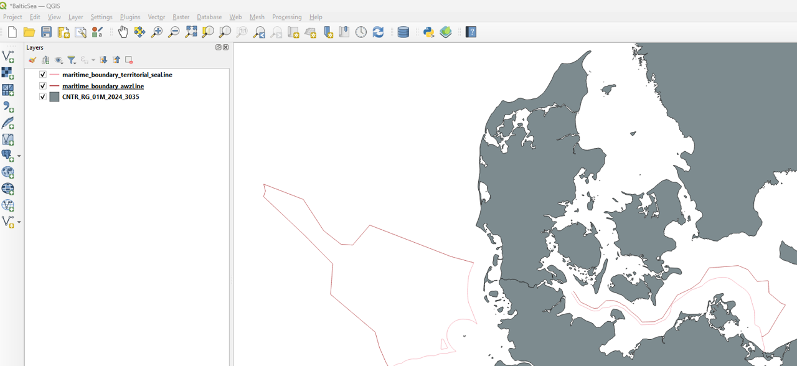
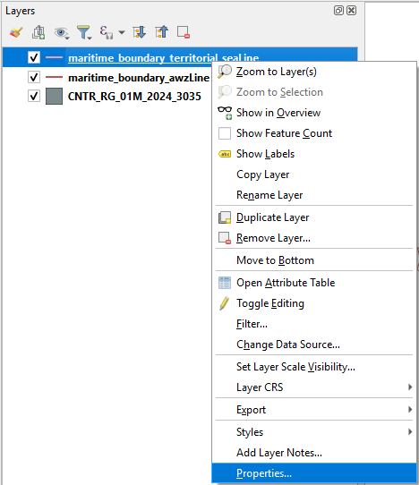
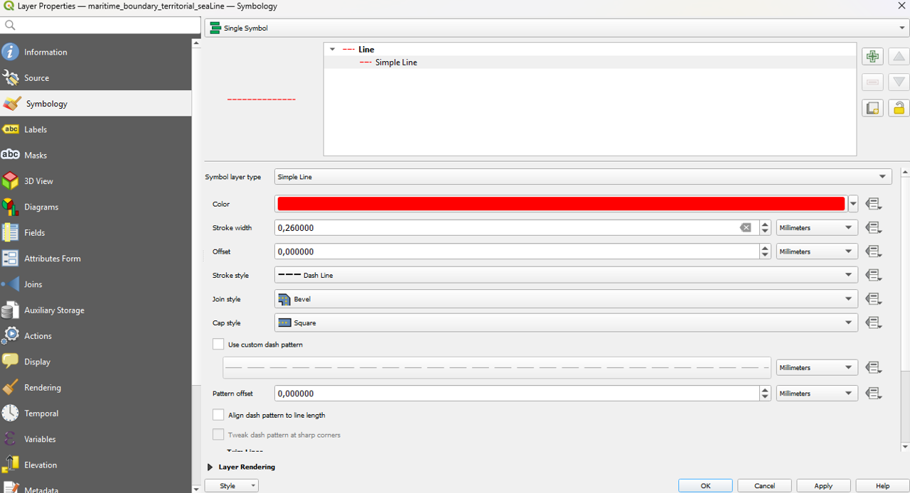
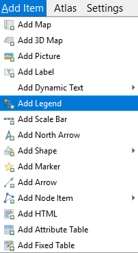
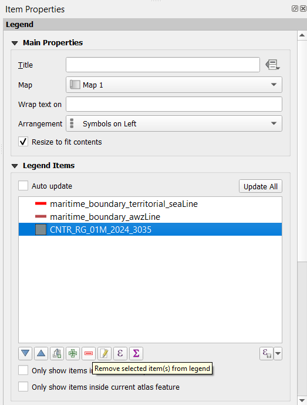
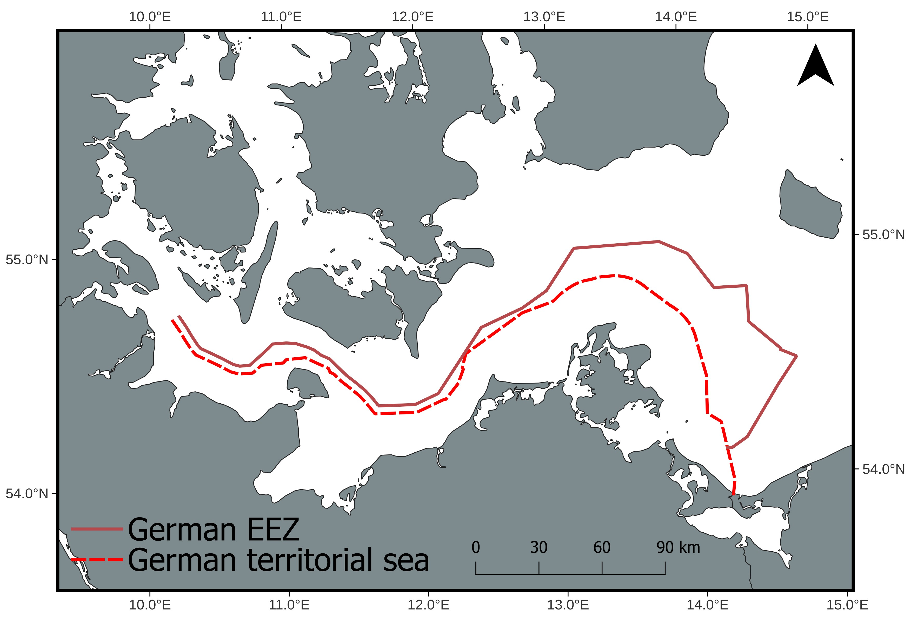

Add legend in QGIS
In this blog post, we’ll explore how to add vector layers and legend in a map with QGIS.
Intro
In this post, we will add vector layers, such as the EEZ and territorial waters, and include their legend on the map. Make sure to follow the previous posts first so that you have the base map ready to work on.
Add layer
To download data for Germany’s EEZ and territorial waters, start by going to GeoSeaPortal. In the Theme Gallery, navigate to Seegrenzen or Maritime Borders, depending on your language settings. Detailed instructions are available in this post.
Once there, click on Was möchten Sie tun?, then scroll to the bottom and select Inhaltsbaum. Under Kartenebenen, click the tool icon, then the download icon. When prompted for WFS download, you can choose Shapefile as the format.
For this tutorial, I downloaded two layers:
Seevermessung_DeutscheSeegrenzen:MaritimeBoundaryTerritorialSea
Seevermessung_DeutscheSeegrenzen:AWZ
I selected the SHAPE-ZIP format for both.
Once downloaded, add both layers to your project using the Add Vector Layer tool.

To modify the style of a layer, start by clicking on the layer you want to adjust. Then, open its Properties panel, where you can customize colors, line styles, transparency, and other visual settings to make the layer display exactly as you want.

Here, I selected Simple Line as the styling option. I then changed the color by clicking on the color square and adjusted the stroke style to a dashed line. This allows the boundary to stand out clearly on the map while maintaining a clean visual style.

Print Layout
Next, open the Print Layout. Then, adjust the map view to create some space around your study area. This ensures that all features, including the new vector layers, will be clearly visible and well-positioned for export.
Using the Select/Move Item tool, adjust the positions of elements such as text legend and the north arrow so that they do not overlap with the boundary lines. This helps keep the map clear and visually balanced.
Legend
To include a legend on your map, go to Add Item > Add Legend. This will insert a legend box into your layout, which you can then customize to display the layers and symbols used in your map.

To customize the legend, you can remove items that are not necessary by selecting them in the legend panel. For example, you might choose to remove the land layer from the legend to keep it focused on the EEZ and territorial waters.
You can further customize the legend by double-clicking on other elements to rename them as needed. The order of elements can also be rearranged to improve readability.
Additionally, you can adjust the symbol width to make the legend more visually balanced. You can also customize the font size and style there.
If desired, unselect the Background option to remove the default legend background and create a cleaner look.

Final
Here is the completed map, with all layers added and the legend fully configured, providing a clear and professional visualization of the study area.

I drew inspiration for this approach from this publication.